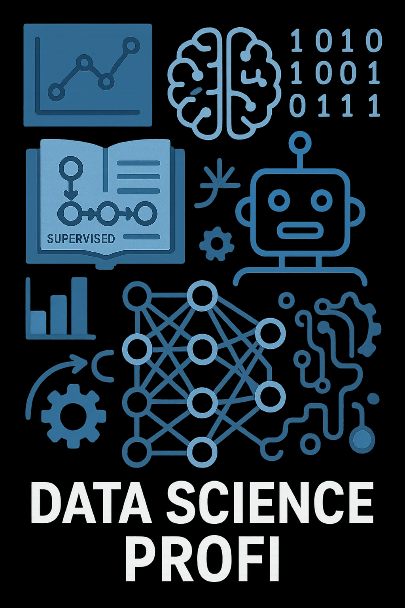

Data Science Profi — наука данных без страха и боли

Добро пожаловать в Data Science Profi — портал для тех, кто хочет не
просто выучить Data Science, а понять его до глубины, прочувствовать
каждой клеткой мозга и научиться использовать силу данных как искусство.
Здесь нет сухой теории и абстрактных формул, которые остаются мёртвым
грузом. Каждый материал — это живое знание, рожденное из практики,
объяснённое простым языком и проиллюстрированное реальными примерами.
Data Science — для всех и не только
Доброго времени суток, коллеги по разуму! Добро пожаловать на сайт
datascienceprofi.ru — Data Science просто, по-человечески и с уважением к
вашему времени и нервной системе! Этот ресурс создан специально для тех,
кто решил влиться в мир анализа данных, машинного обучения и умных
алгоритмов — но не хочет тонуть в морях заумной теории, англоязычных
туториалов и бессонных ночей с ошибками в Jupyter.Проект будет полезен:.
студентам (заочникам, очникам и тем, кто учится по ночам после работы)
начинающим аналитикам и разработчикам
инженерам, маркетологам, предпринимателям
всем, кто однажды услышал «Data is the new oil» — и задумался, где тут
заправка
Краткий обзор сайта удобно свести к нескольким вопросам — и одному ответу
Необходимо разобраться, что такое машинное обучение, и как работает
линейная регрессия в три строчки на Python?
Нужны реальные примеры, чтобы понять, как решать задачи по статистике,
визуализировать данные, строить модели?
На носу собеседование, диплом, pet-проект или внезапное желание «прокачать
себя в AI» — а времени как всегда нет?
Немного об авторе
Зовут меня Никита. Data Scientist, разработчик, фанат визуализаций и
красивого кода. Закончил мехмат, потом увлёкся машинным обучением, ушёл в
IT и понял, что многим просто не хватает нормальных объяснений. Не
гугл-переводов, не заумных лекций, а простого, человеческого языка, без
ощущения, что ты обязан иметь PhD, чтобы понять, что такое градиентный
спуск. Я не собираюсь выкладывать свои фото в тёплых худи с MacBook на
фоне конференций. Лучше я напишу ещё пару уроков по pandas или объясню,
чем ROC-кривая отличается от PR-кривой.